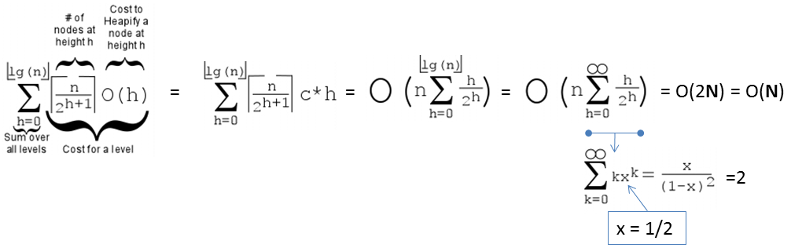

A Binary (Max) Heap is a complete binary tree that maintains the Max Heap property.
Binary Heap is one possible data structure to model an efficient Priority Queue (PQ) Abstract Data Type (ADT). In a PQ, each element has a "priority" and an element with higher priority is served before an element with lower priority (ties are either simply resolved arbitrarily or broken with standard First-In First-Out (FIFO) rule as with a normal Queue). Try clicking for a sample animation on extracting the max value of random Binary Heap above.
To focus the discussion scope, this visualization show a Binary Max Heap of integers where duplicates are allowed. See this for an easy conversion to Binary Min Heap. Generally, any other objects that can be compared can be stored in a Binary Max Heap, e.g., Binary Max Heap of floating points, etc.
Remarks: By default, we show e-Lecture Mode for first time (or non logged-in) visitor.
If you are an NUS student and a repeat visitor, please login.
Complete Binary Tree: Every level in the binary tree, except possibly the last/lowest level, is completely filled, and all vertices in the last level are as far left as possible.
Binary Max Heap property: The parent of each vertex - except the root - contains value greater than (or equal to — we now allow duplicates) the value of that vertex. This is an easier-to-verify definition than the following alternative definition: The value of a vertex - except the leaf/leaves - must be greater than (or equal to) the value of its one (or two) child(ren).
Pro-tip 1: Since you are not logged-in, you may be a first time visitor (or not an NUS student) who are not aware of the following keyboard shortcuts to navigate this e-Lecture mode: [PageDown]/[PageUp] to go to the next/previous slide, respectively, (and if the drop-down box is highlighted, you can also use [→ or ↓/← or ↑] to do the same),and [Esc] to toggle between this e-Lecture mode and exploration mode.
Priority Queue (PQ) Abstract Data Type (ADT) is similar to normal Queue ADT, but with these two major operations:
- Enqueue(x): Put a new element (key) x into the PQ (in some order),
- y = Dequeue(): Return an existing element y that has the highest priority (key) in the PQ and if ties, return any.
Discussion: Some PQ ADT reverts to First-In First-Out (FIFO) behavior of a normal Queue in the event there is a tie of highest priority (key) in the PQ. Does guaranteeing stability on equal highest priority (key) makes PQ ADT harder to implement?
Pro-tip 2: We designed this visualization and this e-Lecture mode to look good on 1366x768 resolution or larger (typical modern laptop resolution in 2021). We recommend using Google Chrome to access VisuAlgo. Go to full screen mode (F11) to enjoy this setup. However, you can use zoom-in (Ctrl +) or zoom-out (Ctrl -) to calibrate this.
The content of this interesting slide (the answer of the usually intriguing discussion point from the earlier slide) is hidden and only available for legitimate CS lecturer worldwide. This mechanism is used in the various flipped classrooms in NUS.
If you are really a CS lecturer (or an IT teacher) (outside of NUS) and are interested to know the answers, please drop an email to stevenhalim at gmail dot com (show your University staff profile/relevant proof to Steven) for Steven to manually activate this CS lecturer-only feature for you.
FAQ: This feature will NOT be given to anyone else who is not a CS lecturer.
Pro-tip 3: Other than using the typical media UI at the bottom of the page, you can also control the animation playback using keyboard shortcuts (in Exploration Mode): Spacebar to play/pause/replay the animation, ←/→ to step the animation backwards/forwards, respectively, and -/+ to decrease/increase the animation speed, respectively.
Imagine: You are an Air Traffic Controller (ATC) working in the control tower T of an airport. You have scheduled aircraft X/Y to land in the next 3/6 minutes, respectively. Both have enough fuel for at least the next 15 minutes and both are just 2 minutes away from your airport. You observe that your airport runway is clear at the moment.
In case you do not know, aircraft can be instructed to fly in holding pattern near the airport until the designated landing time.
You have to attend the live lecture to figure out what happens next...
There will be two options presented to you and you will have to decide:
- Raise AND wave your hand if you choose option A,
- Raise your hand but do NOT wave it if you choose option B,
If none of the two options is reasonable for you, simply do nothing.
The content of this interesting slide (the answer of the usually intriguing discussion point from the earlier slide) is hidden and only available for legitimate CS lecturer worldwide. This mechanism is used in the various flipped classrooms in NUS.
If you are really a CS lecturer (or an IT teacher) (outside of NUS) and are interested to know the answers, please drop an email to stevenhalim at gmail dot com (show your University staff profile/relevant proof to Steven) for Steven to manually activate this CS lecturer-only feature for you.
FAQ: This feature will NOT be given to anyone else who is not a CS lecturer.
There are several potential usages of PQ ADT in real-life on top of what you have seen just now regarding ATC (only in live lecture).
Discussion: Can you mention a few other real-life situations where a PQ is needed?
The content of this interesting slide (the answer of the usually intriguing discussion point from the earlier slide) is hidden and only available for legitimate CS lecturer worldwide. This mechanism is used in the various flipped classrooms in NUS.
If you are really a CS lecturer (or an IT teacher) (outside of NUS) and are interested to know the answers, please drop an email to stevenhalim at gmail dot com (show your University staff profile/relevant proof to Steven) for Steven to manually activate this CS lecturer-only feature for you.
FAQ: This feature will NOT be given to anyone else who is not a CS lecturer.
We are able to implement this PQ ADT using (circular) array or Linked List but we will have slow (i.e., in O(N)) Enqueue or Dequeue operation.
Discussion: Why?
The content of this interesting slide (the answer of the usually intriguing discussion point from the earlier slide) is hidden and only available for legitimate CS lecturer worldwide. This mechanism is used in the various flipped classrooms in NUS.
If you are really a CS lecturer (or an IT teacher) (outside of NUS) and are interested to know the answers, please drop an email to stevenhalim at gmail dot com (show your University staff profile/relevant proof to Steven) for Steven to manually activate this CS lecturer-only feature for you.
FAQ: This feature will NOT be given to anyone else who is not a CS lecturer.
The content of this interesting slide (the answer of the usually intriguing discussion point from the earlier slide) is hidden and only available for legitimate CS lecturer worldwide. This mechanism is used in the various flipped classrooms in NUS.
If you are really a CS lecturer (or an IT teacher) (outside of NUS) and are interested to know the answers, please drop an email to stevenhalim at gmail dot com (show your University staff profile/relevant proof to Steven) for Steven to manually activate this CS lecturer-only feature for you.
FAQ: This feature will NOT be given to anyone else who is not a CS lecturer.
Now, let's view the visualisation of a (random) Binary (Max) Heap above. You should see a complete binary tree and all vertices except the root satisfy the Max Heap property (A[parent(i)] ≥ A[i]). Duplicate integer keys may appear.
You can between the visually more intuitive complete binary tree form or the underlying compact array based implementation of a Binary (Max) Heap.
Quiz: Based on this Binary (Max) Heap property, where will the largest integer be located?
Important fact to memorize at this point: If we have a Binary Heap of N elements, its height will not be taller than O(log N) since we will store it as a complete binary tree.
Simple analysis: The size N of a full (more than just a complete) binary tree of height h is always N = 2(h+1)-1, therefore h = log2(N+1)-1 ~= log2 N.
See example above with N = 7 = 2(2+1)-1 or h = log2(7+1)-1 = 2.
This fact is important in the analysis of all Binary Heap-related operations.
A complete binary tree can be stored efficiently as a compact array A as there is no gap between vertices of a complete binary tree/elements of a compact array. To simplify the navigation operations below, we use 1-based array. VisuAlgo displays the index of each vertex as a red label below each vertex. Read those indices in sorted order from 1 to N, then you will see the vertices of the complete binary tree from top to down, left to right. To help you understand this, several times.
This way, we can implement basic binary tree traversal operations with simple index manipulations (with help of bit shift manipulation):
- parent(i) = i>>1, index i divided by 2 (integer division),
- left(i) = i<<1, index i multiplied by 2,
- right(i) = (i<<1)+1, index i multiplied by 2 and added by 1.
Pro tip: Try opening two copies of VisuAlgo on two browser windows. Try to visualize the same Binary Max Heap in two different modes and compare them.
In this visualization, you can perform several Binary (Max) Heap operations:
- Create(A) - O(N log N) version (N calls of Insert(v) below)
- Create(A) - O(N) version
- Insert(v) in O(log N) — you are allowed to insert duplicates
- 3 versions of ExtractMax():
- Once, in O(log N)
- K times, i.e., PartialSort(), in O(K log N), or
- N times, i.e., HeapSort(), in O(N log N)
- UpdateKey(i, newv) in O(log N if i is known)
- Delete(i) in O(log N if i is known)
There are a few other possible Binary (Max) Heap operations, but currently we do not elaborate them for pedagogical reason in a certain NUS module.
The content of this interesting slide (the answer of the usually intriguing discussion point from the earlier slide) is hidden and only available for legitimate CS lecturer worldwide. This mechanism is used in the various flipped classrooms in NUS.
If you are really a CS lecturer (or an IT teacher) (outside of NUS) and are interested to know the answers, please drop an email to stevenhalim at gmail dot com (show your University staff profile/relevant proof to Steven) for Steven to manually activate this CS lecturer-only feature for you.
FAQ: This feature will NOT be given to anyone else who is not a CS lecturer.
Insert(v): Insertion of a new item v into a Binary Max Heap can only be done at the last index N plus 1 to maintain the compact array = complete binary tree property. However, the Max Heap property may still be violated. This operation then fixes Max Heap property from the insertion point upwards (if necessary) and stop when there is no more Max Heap property violation. Now try clicking several times to insert a few random v to the currently displayed Binary (Max Heap).
The fix Max Heap property upwards operation has no standard name. We call it ShiftUp but others may call it BubbleUp or IncreaseKey operation.
Do you understand why starting from the insertion point (index N+1) upwards (at most until the root) and swapping a vertex with its parent when there is a Max Heap property violation during insertion is always a correct strategy?
The content of this interesting slide (the answer of the usually intriguing discussion point from the earlier slide) is hidden and only available for legitimate CS lecturer worldwide. This mechanism is used in the various flipped classrooms in NUS.
If you are really a CS lecturer (or an IT teacher) (outside of NUS) and are interested to know the answers, please drop an email to stevenhalim at gmail dot com (show your University staff profile/relevant proof to Steven) for Steven to manually activate this CS lecturer-only feature for you.
FAQ: This feature will NOT be given to anyone else who is not a CS lecturer.
The time complexity of this Insert(v) operation is O(log N).
Discussion: Do you understand the derivation?
The content of this interesting slide (the answer of the usually intriguing discussion point from the earlier slide) is hidden and only available for legitimate CS lecturer worldwide. This mechanism is used in the various flipped classrooms in NUS.
If you are really a CS lecturer (or an IT teacher) (outside of NUS) and are interested to know the answers, please drop an email to stevenhalim at gmail dot com (show your University staff profile/relevant proof to Steven) for Steven to manually activate this CS lecturer-only feature for you.
FAQ: This feature will NOT be given to anyone else who is not a CS lecturer.
ExtractMax(): The reporting and then the deletion of the maximum element (the root) of a Binary Max Heap requires an existing element to replace the root, otherwise the Binary Max Heap (a single complete binary tree, or 林/Lín in Chinese/tree) becomes two disjoint subtrees (two copies of 木/mù in Chinese/wood). That element must be the last index N for the same reason: To maintain the compact array = complete binary tree property.
Because we promote a leaf vertex to the root vertex of a Binary Max Heap, it will very likely violates the Max Heap property. ExtractMax() operation then fixes Binary Max Heap property from the root downwards by comparing the current value with the its child/the larger of its two children (if necessary). Now try on the currently displayed Binary (Max) Heap.
The fix Max Heap property downwards operation has no standard name. We call it ShiftDown but others may call it BubbleDown or Heapify operation.
Why if a vertex has two children, we have to check (and possibly swap) that vertex with the larger of its two children during the downwards fix of Max Heap property?
Why can't we just compare with the left (or right, if exists) vertex only?
The content of this interesting slide (the answer of the usually intriguing discussion point from the earlier slide) is hidden and only available for legitimate CS lecturer worldwide. This mechanism is used in the various flipped classrooms in NUS.
If you are really a CS lecturer (or an IT teacher) (outside of NUS) and are interested to know the answers, please drop an email to stevenhalim at gmail dot com (show your University staff profile/relevant proof to Steven) for Steven to manually activate this CS lecturer-only feature for you.
FAQ: This feature will NOT be given to anyone else who is not a CS lecturer.
The time complexity of this ExtractMax() operation is O(log N).
Discussion: Do you understand the derivation?
The content of this interesting slide (the answer of the usually intriguing discussion point from the earlier slide) is hidden and only available for legitimate CS lecturer worldwide. This mechanism is used in the various flipped classrooms in NUS.
If you are really a CS lecturer (or an IT teacher) (outside of NUS) and are interested to know the answers, please drop an email to stevenhalim at gmail dot com (show your University staff profile/relevant proof to Steven) for Steven to manually activate this CS lecturer-only feature for you.
FAQ: This feature will NOT be given to anyone else who is not a CS lecturer.
Up to here, we have a data structure that can implement the two major operations of Priority Queue (PQ) ADT efficiently:
- For Enqueue(x), we can use Insert(x) in O(log N) time, and
- For y = Dequeue(), we can use y = ExtractMax() in O(log N) time.
However, we can do a few more operations with Binary Heap.
Create(A): Creates a valid Binary (Max) Heap from an input array A of N integers (comma separated) into an initially empty Binary Max Heap.
There are two variants for this operations, one that is simpler but runs in O(N log N) and a more advanced technique that runs in O(N).
Pro tip: Try opening two copies of VisuAlgo on two browser windows. Execute different Create(A) versions on the worst case 'Sorted example' to see the somewhat dramatic differences of the two.
Create(A) - O(N log N): Simply insert (that is, by calling Insert(v) operation) all N integers of the input array into an initially empty Binary Max Heap one by one.
Analysis: This operation is clearly O(N log N) as we call O(log N) Insert(v) operation N times. Let's examine the 'Sorted example' which is one of the hard case of this operation (Now try the where we show a case where A = [1,2,3,4,5,6,7] -- please be patient as this example will take some time to complete). If we insert values in increasing order into an initially empty Binary Max Heap, then every insertion triggers a path from the insertion point (a new leaf) upwards to the root.
Create(A) - O(N): This faster version of Create(A) operation was invented by Robert W. Floyd in 1964. It takes advantage of the fact that a compact array = complete binary tree and all leaves (i.e., half of the vertices — see the next slide) are Binary Max Heap by default. This operation then fixes Binary Max Heap property (if necessary) only from the last internal vertex back to the root.
Analysis: A loose analysis gives another O(N/2 log N) = O(N log N) complexity but it is actually just O(2*N) = O(N) — details in the next few slides. Now try the on the same input array A = [1,2,3,4,5,6,7] and see that on the same hard case as with the previous slide (but not the one that generates maximum number of swaps — try 'Diagonal Entry' test case by yourself), this operation is far superior than the O(N log N) version.
Simple explanation on why half of Binary (Max) Heap of N (without loss of generality, let's assume that N is even) elements are leaves are as follows:
Suppose that the last leaf is at index N, then the parent of that last leaf is at index i = N/2 (remember this slide). The left child of vertex i+1, if exists (it actually does not exist), will be 2*(i+1) = 2*(N/2+1) = N+2, which exceeds index N (the last leaf) so index i+1 must also be a leaf vertex that has no child. As Binary Heap indexing is consecutive, basically indices [i+1 = N/2+1, i+2 = N/2+2, ..., N], or half of the vertices, are leaves.
First, we need to recall that the height of a full binary tree of size N is log2 N.
Second, we need to realise that the cost to run shiftDown(i) operation is not the gross upper bound O(log N), but O(h) where h is the height of the subtree rooted at i.
Third, there are ceil(N/2h+1) vertices at height h in a full binary tree.
On the example full binary tree above with N = 7 and h = 2, there are:
ceil(7/20+1) = 4 vertices: {44,35,26,17} at height h = 0,
ceil(7/21+1) = 2 vertices: {62,53} at height h = 1, and
ceil(7/22+1) = 1 vertex: {71} at height h = 2.
Cost of Create(A), the O(N) version is thus:

PS: If the formula is too complicated, a modern student can also use WolframAlpha instead.
HeapSort(): John William Joseph Williams invented HeapSort() algorithm in 1964, together with this Binary Heap data structure. HeapSort() operation (assuming the Binary Max Heap has been created in O(N)) is very easy. Simply call the O(log N) ExtractMax() operation N times. Now try on the currently displayed Binary (Max) Heap.
Simple Analysis: HeapSort() clearly runs in O(N log N) — an optimal comparison-based sorting algorithm.
Quiz: In worst case scenario, HeapSort() is asymptotically faster than...
Merge SortSelection Sort
Bubble Sort
Insertion Sort
Although HeapSort() runs in θ(N log N) time for all (best/average/worst) cases, is it really the best comparison-based sorting algorithm?
Discussion: How about caching performance of HeapSort()?
The content of this interesting slide (the answer of the usually intriguing discussion point from the earlier slide) is hidden and only available for legitimate CS lecturer worldwide. This mechanism is used in the various flipped classrooms in NUS.
If you are really a CS lecturer (or an IT teacher) (outside of NUS) and are interested to know the answers, please drop an email to stevenhalim at gmail dot com (show your University staff profile/relevant proof to Steven) for Steven to manually activate this CS lecturer-only feature for you.
FAQ: This feature will NOT be given to anyone else who is not a CS lecturer.
We can actually just call the O(log N) ExtractMax() operation K times if we are only interested in the top K largest elements in the Binary (Max) Heap. Now try on the currently displayed Binary (Max) Heap. This operation is called PartialSort().
Simple Analysis: PartialSort() clearly runs in O(K log N) — an output-sensitive algorithm where the time complexity depends on the output size K.
You have reached the end of the basic stuffs of this Binary (Max) Heap data structure and we encourage you to explore further in the Exploration Mode.
However, we still have a few more interesting Binary (Max) Heap challenges for you that are outlined in this section.
When you have cleared them all, we invite you to study more advanced algorithms that use Priority Queue as (one of) its underlying data structure, like Prim's MST algorithm, Dijkstra's SSSP algorithm, A* search algorithm (not in VisuAlgo yet), a few other greedy-based algorithms, etc.
If we only deal with numbers (including this visualization that is restricted to integers only), it is easy to convert a Binary Max Heap into a Binary Min Heap without changing anything, or vice versa.
We can re-create a Binary Heap with the negation of every integer in the original Binary Heap. If we start with a Binary Max Heap, the resulting Binary Heap is a Binary Min Heap (if we ignore the negative symbols — see the picture above), and vice versa.
For some Priority Queue applications (e.g., HeapDecreaseKey in Dijkstra's algorithm), we may have to modify (increase or decrease) the priority of an existing value that is already inserted into a Binary (Max) Heap. If the index i of the value is known, we can do the following simple strategy: Simply update A[i] = newv and then call both shiftUp(i) and shiftDown(i). Only at most one of this Max Heap property restoration operation will be successful, i.e., shiftUp(i)/shiftDown(i) will be triggered if newv >/< old value of A[parent(i)]/A[larger of the two children of i], respectively.
Thus, UpdateKey(i, newv) can be done in O(log N), provided we know index i.
For some Priority Queue applications, we may have to delete an existing value that is already inserted into a Binary (Max) Heap (and this value happens to be not the root). Again, if the index i of the value is known, we can do the following simple strategy: Simply update A[i] = A[1]+1 (a larger number greater than the current root), call shiftUp(i) (technically, UpdateKey(i, A[1]+1)). This will floats index i to be the new root, and from there, we can easily call ExtractMax() once to remove it.
Thus, Delete(i) can be done in O(log N), provided we know index i.
Discussion: Now for UpdateKey(i, newv) and Delete(i), what if we are given oldv instead and thus we have to search for its location in the Binary (Max) Heap? Can we do this faster than O(N)?
The content of this interesting slide (the answer of the usually intriguing discussion point from the earlier slide) is hidden and only available for legitimate CS lecturer worldwide. This mechanism is used in the various flipped classrooms in NUS.
If you are really a CS lecturer (or an IT teacher) (outside of NUS) and are interested to know the answers, please drop an email to stevenhalim at gmail dot com (show your University staff profile/relevant proof to Steven) for Steven to manually activate this CS lecturer-only feature for you.
FAQ: This feature will NOT be given to anyone else who is not a CS lecturer.
If you are looking for an implementation of Binary (Max) Heap to actually model a Priority Queue, then there is a good news.
C++ and Java already have built-in Priority Queue implementations that very likely use this data structure. They are C++ STL priority_queue (the default is a Max Priority Queue) and Java PriorityQueue (the default is a Min Priority Queue). However, the built-in implementation may not be suitable to do some PQ extended operations efficiently (details omitted for pedagogical reason in a certain NUS course).
Python heapq exists but its performance is rather slow. OCaml doesn't have built-in Priority Queue but we can use something else that is going to be mentioned in the other modules in VisuAlgo (the reason on why the details are omitted is the same as above).
PS: Heap Sort is likely used in C++ STL algorithm partial_sort.
Nevertheless, here is our implementation of BinaryHeapDemo.cpp | py | java.
For a few more interesting questions about this data structure, please practice on Binary Heap training module (no login is required).
However, for NUS students, you should login using your official class account, officially clear this module, and such achievement will be recorded in your user account.
We also have a few programming problems that somewhat requires the usage of this Binary Heap data structure: UVa 01203 - Argus and Kattis - numbertree.
Try them to consolidate and improve your understanding about this data structure. You are allowed to use C++ STL priority_queue, Python heapq, or Java PriorityQueue if that simplifies your implementation.
The content of this interesting slide (the answer of the usually intriguing discussion point from the earlier slide) is hidden and only available for legitimate CS lecturer worldwide. This mechanism is used in the various flipped classrooms in NUS.
If you are really a CS lecturer (or an IT teacher) (outside of NUS) and are interested to know the answers, please drop an email to stevenhalim at gmail dot com (show your University staff profile/relevant proof to Steven) for Steven to manually activate this CS lecturer-only feature for you.
FAQ: This feature will NOT be given to anyone else who is not a CS lecturer.
After spending one long lecture on Binary (Max) Heap, here is a jaw-dropping moment...
Binary (Max) Heap data structure is probably not the best data structure to implement (certain operations of) ADT Priority Queue...
Discussion: So what is the alternative data structure?
The content of this interesting slide (the answer of the usually intriguing discussion point from the earlier slide) is hidden and only available for legitimate CS lecturer worldwide. This mechanism is used in the various flipped classrooms in NUS.
If you are really a CS lecturer (or an IT teacher) (outside of NUS) and are interested to know the answers, please drop an email to stevenhalim at gmail dot com (show your University staff profile/relevant proof to Steven) for Steven to manually activate this CS lecturer-only feature for you.
FAQ: This feature will NOT be given to anyone else who is not a CS lecturer.
You have reached the last slide. Return to 'Exploration Mode' to start exploring!
Note that if you notice any bug in this visualization or if you want to request for a new visualization feature, do not hesitate to drop an email to the project leader: Dr Steven Halim via his email address: stevenhalim at gmail dot com.
-> Compact Array Mode
Create(A) - O(N log N)
Create(A) - O(N)
Insert(v)
ExtractMax()
UpdateKey(i, newv)
Delete(i)